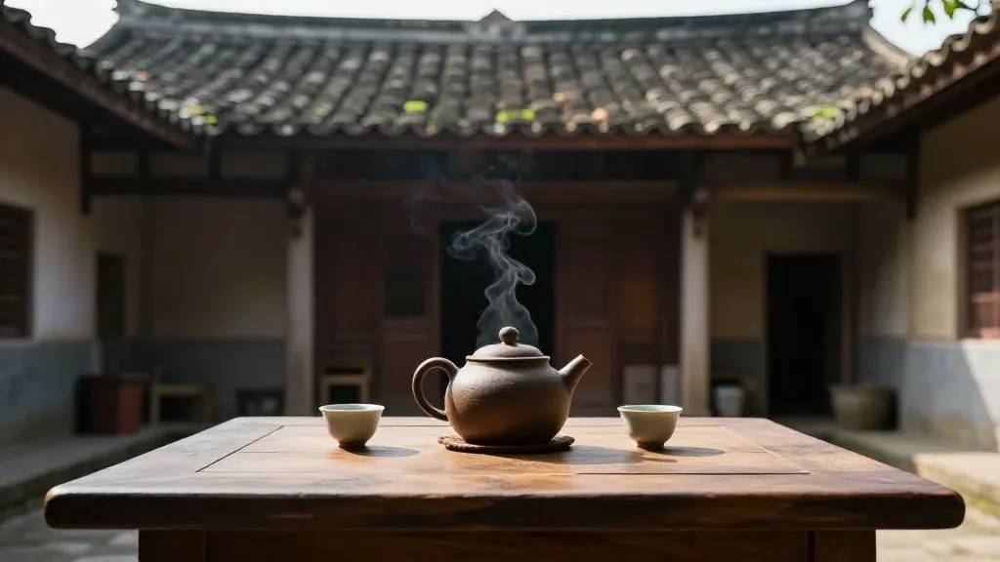

🍂 天还没亮透，我就摸黑上了山。
凤凰山海拔一千四百米的茶园里，处暑的晨雾浓得能拧出水来。我弯腰拨开一丛鸭屎香的枝条，露水顺着叶脉滚下来，凉丝丝地落进袖口。远处乌岽村的公鸡刚打第一遍鸣，山下的世界大概还在睡觉，可我们茶农的节气表，从来都比日历快半拍。
今天是处暑。老人家讲："处暑喝茶，秋燥不怕。"我直起腰，望着层层叠叠的茶树从半山腰铺到云端。八月末了，夏茶已经收尾，秋茶——我们凤凰山人叫"雪片"的宝贝——正在枝头悄悄攒着香气。
手机在兜里震了一下。屏幕上跳出一条新闻推送——"饮料大王卖不动了。"我愣了一下，嘴角没忍住翘起来。
📌 第一幕：老陈的电话，和一箱卖不动的"甜水"
"阿凤啊，你秋茶什么时候有货？我这边等着送礼呢！"电话那头，老陈的声音炸得耳朵疼。他在深圳开物流公司，喝了十年我的茶，舌头养得比审评师还刁。
"处暑才刚到，雪片还要等霜降呢，你急什么？"我把手机夹在肩膀和耳朵之间，"上次寄的蜜兰香喝完没有？"
"早光了！"老陈哈哈笑，"我跟你说，现在我这办公室里，年轻人都被我带得喝单丛了。昨天新闻说那个卖了几十年甜水的'饮料大王'，销量断崖式下跌！年轻人现在都不喝那玩意了，嫌甜、嫌假、嫌不健康。"
"有个小姑娘跟我说，'陈总，我喝阿凤姐的茶三个月，把奶茶戒了，皮肤都好了'。你说，这不比那些配料表写满化学名的饮料强？"
挂了电话，我坐在石头上发了会儿呆。十几年前我刚回村种茶的时候，城里人都追着进口饮料、网红奶茶跑。谁能想到，风水轮流转，如今大家又回过头来，找这一口干干净净的树叶味道了。
📌 第二幕：两个被"甲醛白菜"吓坏的年轻人
中午时分，茶寮外来了一辆挂着广州牌照的白色轿车。下来两个年轻人，一男一女，看着二十五六岁。
"请问……这里是阿凤姐的茶园吗？我们在短视频上刷到您的。"女孩子先开口，声音细细的。
"是我，"我笑着迎上去，"上来得不容易吧？山路十八弯。""差点吐了，"男孩子挠挠头，"但刷到您说处暑要喝高山单丛解秋燥，我们就想来看看……真正的茶是怎么长的。"
我领着他们往茶园深处走。女孩子忽然压低声音问："凤姐，您看新闻了吗？那个……甲醛白菜的事。""看了，"我点点头，"热搜上挂一整天了，说是有批发商拿甲醛保鲜白菜。"
"我现在都不敢去超市买蔬菜了，"女孩子皱着眉，"连白菜都能动手脚，那我们平时吃的东西，到底还有多少是安全的？"男孩子也叹气："我们就是从广州特意开车过来的。城里买的东西，配料表像天书，添加剂一栏拉不到底。我就想，与其这样，不如直接来找源头——看看茶到底怎么种出来的，喝着才放心。"
走到一片开阔处，我停下来，弯腰掐了一片鸭屎香的嫩叶，递到他们面前："闻闻。"
女孩子凑近，眼睛亮起来："好香……是花香还是奶香？""这就是凤凰单丛最厉害的地方，一棵树一个味，"我指着远处几棵老茶树，"你看那棵，六十年树龄的宋种，每年产不到三斤茶。我们不打农药，不用除草剂，杂草都是人工拔的。肥料？自家鸡粪和豆饼发酵的。你们今天喝的这口茶，从树上到杯里，除了阳光、山泉水和炭火，没有第四样东西。"
男孩子蹲下来，抓起一把脚下的红土："这是……""凤凰山特有的火山岩风化土，矿物质多，种出来的茶才有'山韵'，"我拍拍他的肩，"你们担心的甲醛、添加剂、保鲜剂，在我们这儿，听都没听过。茶叶要坏，那就是坏了，绝不给你搞什么化学手段'起死回生'。"
女孩子掏出手机，对着茶园拍了一圈，转头问我："凤姐，我能发个小红书吗？就说……处暑这天，我在凤凰山找到了没有甲醛的世界。"
"发吧，"我大笑，"记得定位，回头迷路了我好找人。"
📌 第三幕：父亲的炭火，和一盏点给秋天的茶
傍晚时分，两个年轻人带走了两斤蜜兰香、一斤鸭屎香，还有我腌的一罐凤凰山酸橄榄。
我回到老厝，父亲正坐在炭炉前，用竹筛翻着今天刚晒青的茶叶。他七十二岁了，手指关节粗大得像老树根，可翻动茶青的动作却轻得像在抚摸婴儿。
"处暑了，"父亲没抬头，声音闷闷的，"该准备雪片的青了。""知道，"我搬了张小竹凳坐在他旁边，"老陈订了二十斤，还有两个广州来的年轻人，说是怕城里的添加剂，来山里找放心茶。"
父亲哼了一声："早该这样了。"他停下手中的活，盯着炭炉里通红的炭块："我年轻的时候，凤凰山的茶卖不出去，要挑到潮州的集市上卖，一斤换不来几斤米。后来外面兴起了那些甜水、汽水，年轻人嫌茶苦，嫌泡茶麻烦。那时候我就想，这祖祖辈辈传下来的树叶，是不是要断在我们这一代手里了。"
我静静听着，给父亲倒了杯温茶。"但现在不一样了，"父亲抬起头，昏黄的眼睛里映着炭火，"你看你用手机直播，山里的事让全中国都看得见。那些城里孩子，自己找上门来要喝茶。不是茶变了，是人醒了——他们终于知道，真正的好东西不用广告，树叶本身会说话。"
我打开手机，给父亲看那条"饮料大王卖不动了"的新闻。他眯着眼看了半天，把手机还给我，只说了一句话：
"假的，永远卖不过真的。"
夜色完全笼罩了凤凰山。我和父亲把晒好的青叶收进竹篓，明天还要做青、杀青、揉捻……处暑之后，每一道工序都在跟时间赛跑，要把这一季的山气花香，全锁进那几片卷曲的叶子里。
📌 写在最后
夜里十点，老厝的院子安静下来。我独自坐在门廊下，泡了一壶今天刚焙好的鸭屎香。沸水冲下去，茶叶在盖碗里翻滚舒展，一股银花香混着淡淡的奶香腾起来，被山风一吹，散得满院子都是。
山下的潮州城灯火点点，像撒了一地的星子。更远处的深圳、广州，还有无数叫不上名字的城市，此刻有多少人正刷着"甲醛白菜"的新闻提心吊胆，有多少人在便利店的饮料柜前犹豫着该拿哪一瓶？
我不知道。但我知道，此刻凤凰山上一千四百米的茶园里，茶树正在处暑的夜风中沉睡。再过一个月，霜降一到，雪片茶就要开始采摘了。那将是凤凰山一年中最香的一季——芝兰香、桂花香、姜花香、夜来香……百花香型在霜雾里竞放，像整座山开了一场无声的百花大会。
我端起茶杯，轻轻啜了一口。茶汤金黄透亮，入口先是微微的苦，随即化开，回甘像山泉一样从舌底涌上来，带着高山冷韵，直透肺腑。
秋燥？在这盏茶面前，不存在的。处暑饮茶，饮的不是时髦，不是焦虑，是一份"我知道这片叶子从哪来"的踏实。